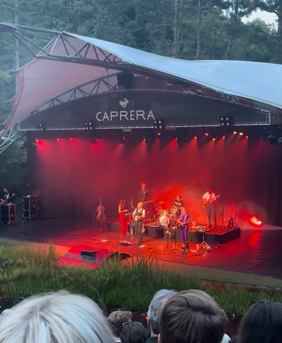
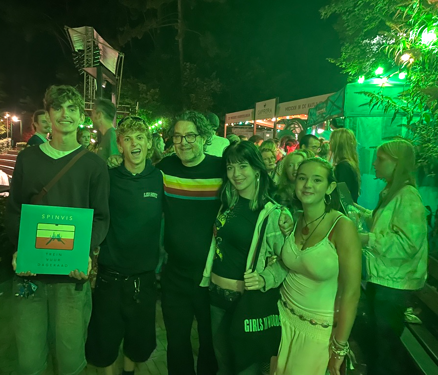

dit stukje text gaat over Spinvis, een beetje backstory en uitleg over
hem als artiest.
Wie is spinvis? Spinvis: Erik de jong (1961) geboren in spijkenisse. Is
begonnen met het schrijven van teksten op zijn oude baan als
postsorteerder. Hij schreef kleine stukjes rijm, poezie of andere mooie
teksten op in boekjes en 'lijmde' deze als het ware aan elkaar in
nummers. Spinvis is inmiddels niet meer weg te denken uit de nederlandse
muziek scene, met zijn zweverige teksten en rakende rijmen emotioneert
hij mij en vele anderen.

Dit gaat over mijn ervaring op zijn concert + een kleine review
